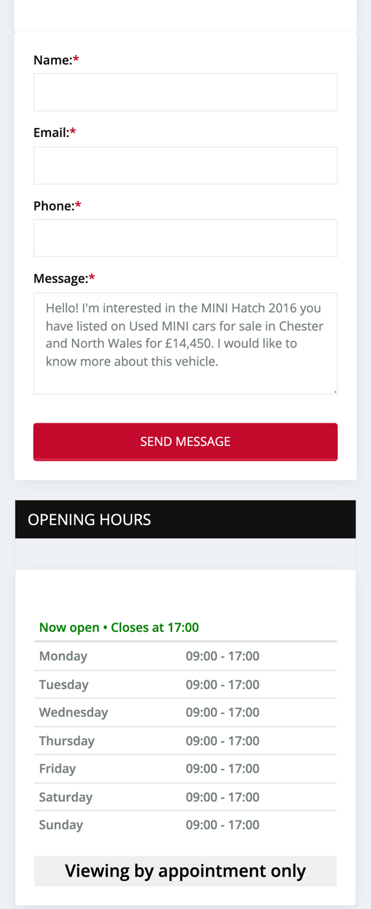
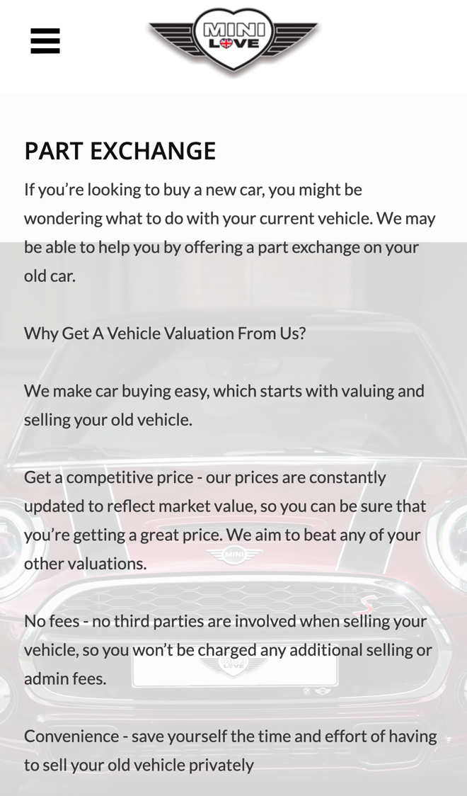

Minilove: from browsing a car to booking a viewing, faster
I went through your website on a phone, the way someone hunting for a used MINI would, and read your stock list, a car page, and your part exchange, finance, about and contact pages. The cars are well described and your reviews speak for themselves. Where I think you'd save time and sell more is in how viewings and valuations get arranged.
What's already working
Three things I'd change
Let buyers book a viewing slot
Every page says "VIEWING BY APPOINTMENT ONLY", and you're open 9am to 5pm, seven days a week. To arrange a viewing, a car page offers a message form that starts "I would like to know more about this vehicle", or a call to 01244 757507.

Every viewing starts with a message or a call, then a time agreed back and forth. Someone browsing late at night, keen on a car, can't lock in a time while they're keen.
- Each car page gets a Book a viewing button showing your free times over the next few days.
- They pick a time and get a confirmation with your address, plus a reminder on the morning of the viewing.
- You see who's coming, for which car, and whether they have a part exchange.
Value part exchanges from a short form
Your part exchange page offers a "No obligation valuation" and says "We aim to beat any of your other valuations", and your About page says "Please call for a valuation." There's no form for the customer's car details.

A buyer who doesn't know what their old car is worth often won't commit to the next one. Each valuation also means a call to take down the reg, mileage and condition.
- A short form asks for the reg, mileage, condition and a few photos.
- You get it all in one message, check it against the market and send a figure back.
- The figure goes back with a link to the car they like and a button to book a viewing.
Catch calls while you're out buying
Your homepage says "We travel far and wide to buy quality used cars", and every viewing is arranged through one number, 01244 757507, or a message.
When you're away buying stock or out on a test drive, a missed call can be a buyer who simply rings the next dealer.
- A missed call gets a text back within a minute: sorry we missed you, we're out with a car.
- The text links to your stock list and lets them book a viewing or a call back.
- At the end of the day you see every missed caller in one list, with the car they asked about.
Your website, answering for you
An assistant that answers the questions you get asked again and again, at any hour. These answers come only from your own website: your contact, about, finance and part exchange pages.
Anything it can't answer, it passes to you with the customer's details.
What happens next
For five local businesses I'm setting up one of these for free, in return for an honest review. Pick whichever would help most.
I'm Tom Williams and I run Tomoni-AI. If a 20-minute chat would help, reply to my email or give me a ring.
Call 07971 512158Email Tom